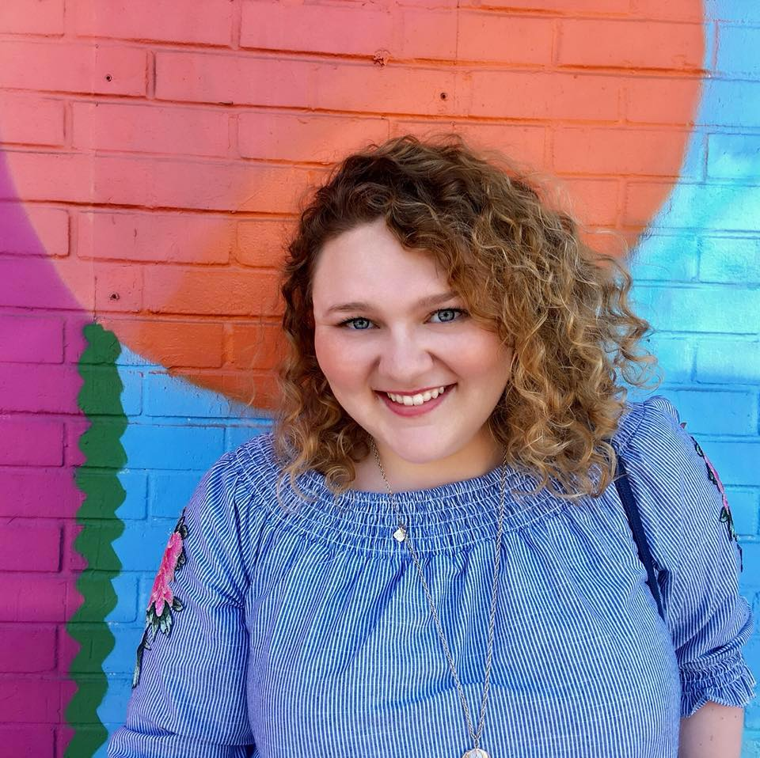
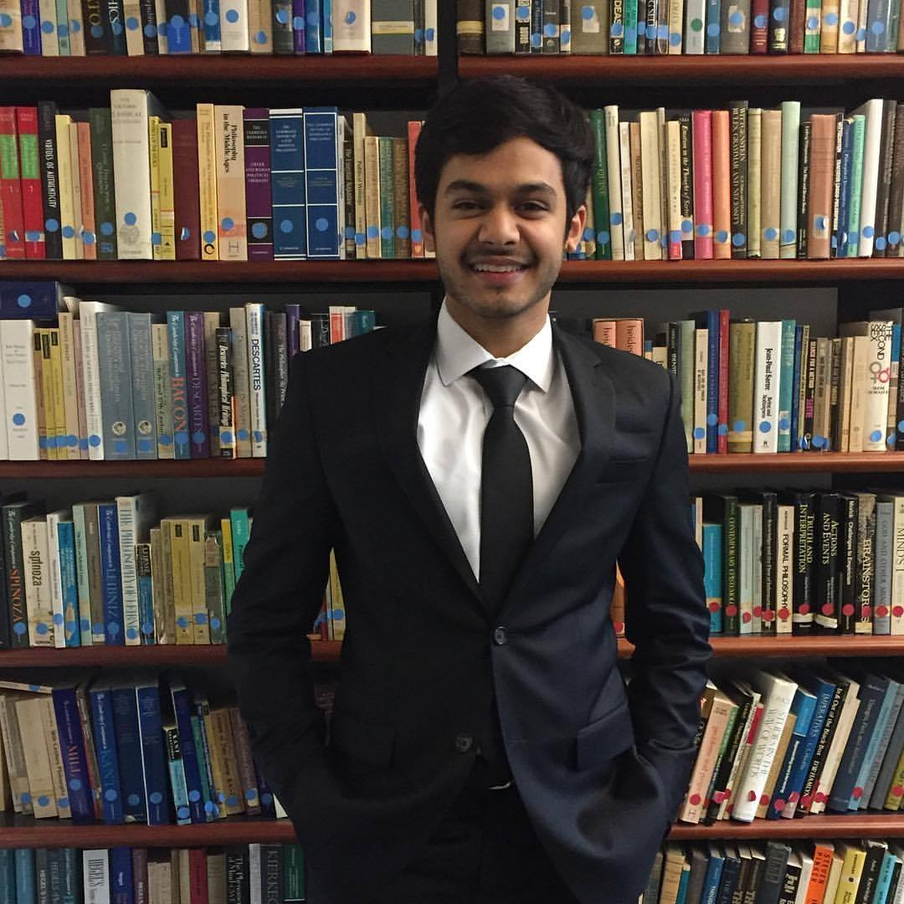
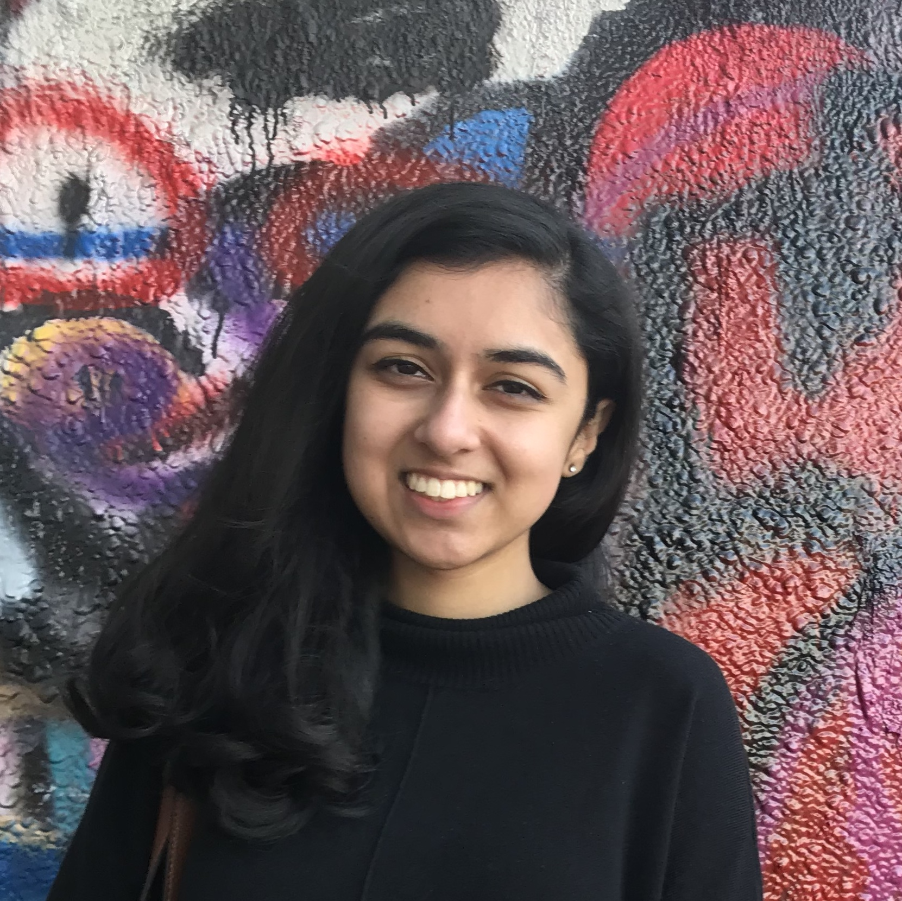
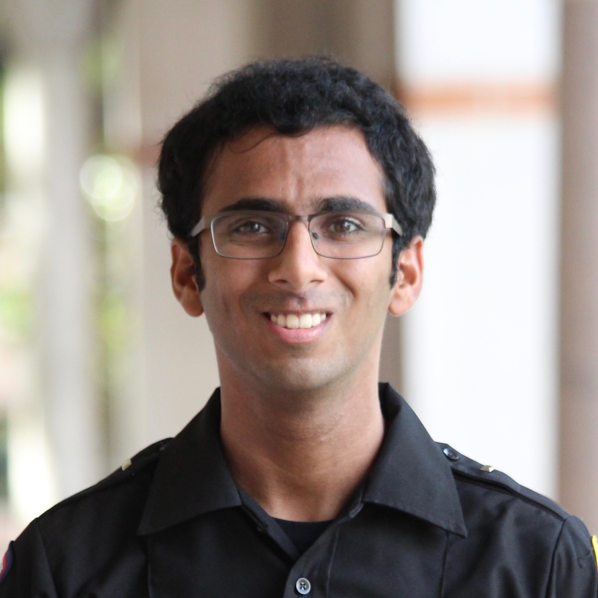
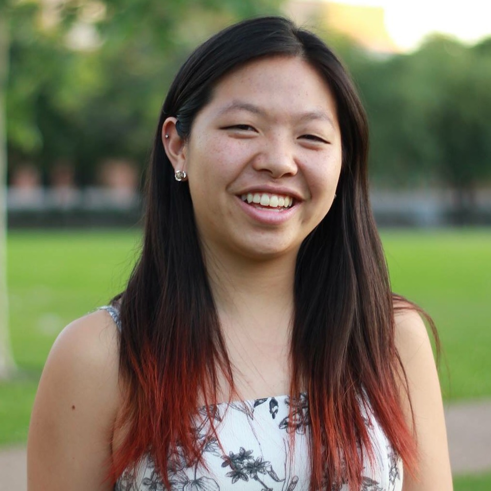
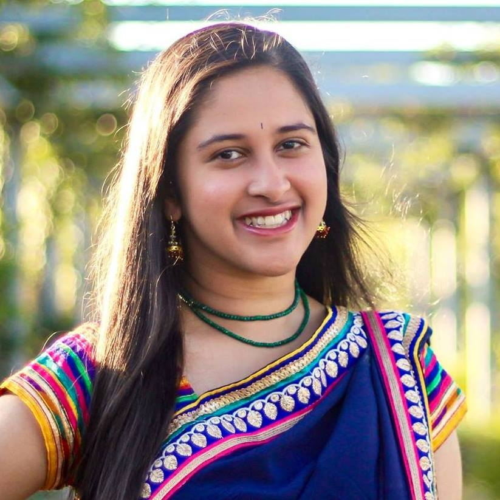
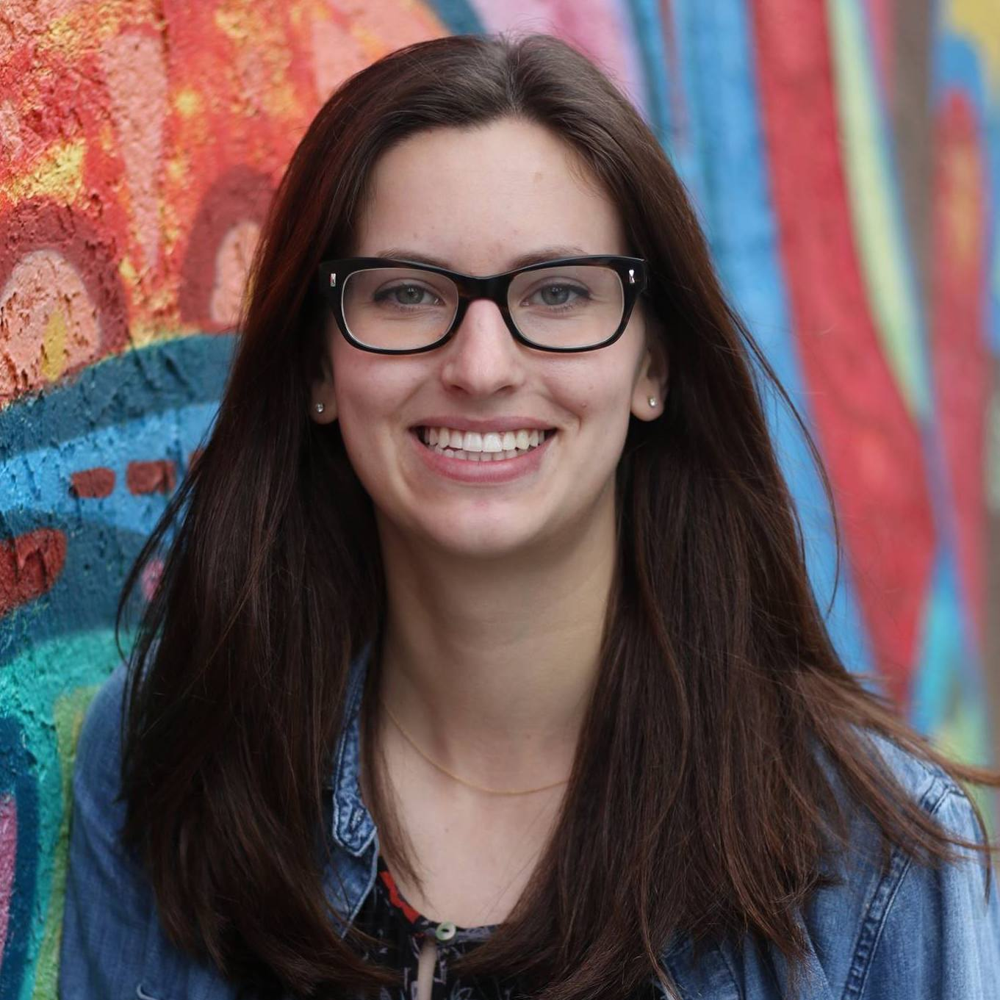

Miriam Shayeb, President Will Rice College '19 English, Spanish & Portuguese, Medical Humanities Minor

Hello! I'm Miriam Shayeb, and I'm MedHum's President this year. Originally from Midland, Texas, I'm a senior at Will Rice majoring in English and Spanish and minoring in the Medical Humanities. I love reading, going to museums, and visiting Houston's many coffee shops. One of the topics that really interests me within the medical humanities is the history of medicine in the U.S. I enjoy researching public health in the postbellum South as well as the intersections of race and gender in medical treatment and medical professionalism in that era. I love being a part of MedHum and am so excited to lead the club this year!
Isabel Kilroy, External Vice President Duncan College '20 Cognitive Sciences, Medical Humanities minor
Hey MedHum! My name is Isabel Kilroy and I will be this year's external vice president. I am a junior from Duncan studying cognitive science and medical humanities. My favorite foods are french fries and pancakes, my favorite movie is Spirited Away, and my favorite animal is a turtle. When I’m not in class, I'm easy to spot around campus sporting a bubblegum pink helmet and riding a bike that's at least two sizes too large for me. In the medical humanities, I am most interested in the social determinants of health, shaping of health policy, and cultural humility in care. I can't wait to see what this next year brings!
Bilal Rehman, Internal Vice President Duncan College '20 Philosophy

Hi all, I'm Bilal and I'll be serving as the Internal Vice President this year. I'm interested in the relationship between neoliberalism and healthcare in the United States, and my philosophical interests currently include critical theory and postmodernism. Outside of Fondren, you can usually find me at the rec or roaming the museum district. My favorite part about MedHum is that the small group events we hold invite thoughtful dialogue about a wide range of issues, often with experts in the field.
Emily Duffus, Treasurer McMurtry College '21 Cognitive Sciences, Biochemistry Minor, Medical Humanities Minor
My name is Emily Duffus and I’m a sophomore at McMurtry College. I am going for a major in Cognitive Science and minors in both Biochemistry and Medical Humanities. I’m also involved in RPC, McMurtry government, powderpuff, and REMS. I love MedHum because I enjoy learning about and questioning the role of empathy in medicine. I can’t wait to see what this year has in store for us!
Emma Every, Secretary Wiess College '20 English, Biochemistry and Cell Biology Minor, Medical Humanities Minor
Hi MedHum! I'm Emma and I will be this year's secretary. I love playing soccer, hiking, and drinking too much cold brew. I study English as well as the pre-med curriculum, and I love the intersection of the two, specifically how the literature we read and other media we consume shape our views on illness and health. I am currently working on a project to address the communication gap between people with disabilities and their healthcare providers, and I volunteer at the Omega House, so feel free to talk to me about either of those!
Naimah Sarwar, Publicity Chair McMurtry College '19 Cognitive Sciences

Jake Lesher, Coffee Chats Chair Will Rice College '20 Neuroscience

Aseem Utrankar, Symposium Chair Will Rice College '20 Social Policy Analysis, Medical Humanities Minor
Jean Choi, Socials Chair Will Rice College '21 Sociology, BioSciences
Rebecca Chen, South College Reps Chair Brown College '19 English, Biochemistry & Cell Biology Minor, Sociology Minor, Medical Humanities Minor

Julie Thamby, North College Reps Chair Martel College '20 Cognitive Sciences, Biochemistry Minor
Roma Nayyar, Outreach Chair Brown College '21 Kinesiology Health Sciences, Medical Humanities Minor, Biochemistry Minor

Rishab Ramapriyan, Fundraising Chair Will Rice College '21 Biochemistry & Cell Biology Major, Medical Humanities Minor

Jeremy Wang, Historian Martel College Kinesiology, Asian Studies
Lucy Fox, Website Manager Wiess College '19 Computer Science